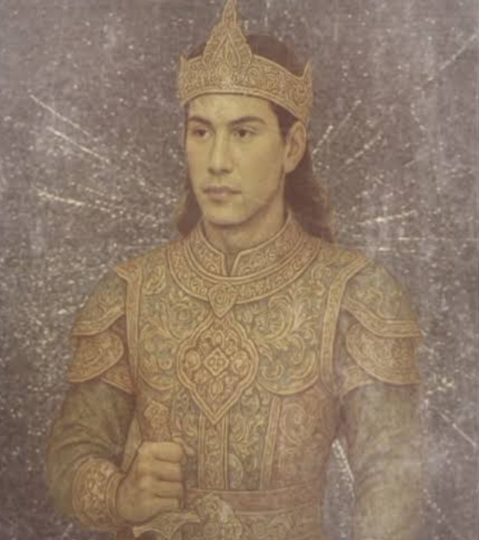

Ritual & Tradisi
Kebo-Keboan
Tradisi unik di Desa Alasmalang dimana warga berdandan menyerupai kerbau sebagai bentuk rasa syukur atas hasil panen.
Pelajari Lebih Lanjut →Culture Archive
Jelajahi kekayaan budaya, tradisi, dan warisan leluhur Suku Osing dalam arsip digital modern
Kabupaten di ujung timur Pulau Jawa yang kaya akan warisan budaya Suku Osing
Banyuwangi adalah kabupaten di Provinsi Jawa Timur yang memiliki kekayaan budaya luar biasa. Dikenal sebagai "The Sunrise of Java", wilayah ini merupakan rumah bagi Suku Osing, masyarakat asli dengan tradisi yang telah diwariskan selama ratusan tahun.
Dari tarian Gandrung yang memukau, ritual Petik Laut yang sakral, hingga batik dengan motif khas yang penuh makna filosofis - setiap aspek budaya Banyuwangi menyimpan cerita dan nilai-nilai luhur yang patut dilestarikan.
Berbagai tari dan musik tradisional yang unik
Upacara dan tradisi yang sakral
Motif batik dengan filosofi mendalam


Jelajahi berbagai aspek kebudayaan Banyuwangi
Upacara adat dan tradisi sakral masyarakat Osing
Kesenian tari dan musik tradisional yang memukau
Bahasa, rumah adat, dan kehidupan sehari-hari
Motif batik khas dengan filosofi mendalam
Legenda dan kisah heroik masyarakat Banyuwangi
21 warisan budaya yang wajib kamu ketahui
Tradisi unik di Desa Alasmalang dimana warga berdandan menyerupai kerbau sebagai bentuk rasa syukur atas hasil panen.
Pelajari Lebih Lanjut →
Tradisi syukur nelayan Muncar dengan larung sesaji ke tengah laut sebagai wujud terima kasih atas hasil tangkapan.
Pelajari Lebih Lanjut →
Upacara tolak bala tertua di Desa Kemiren yang dilaksanakan setiap 2 Syawal untuk membersihkan desa dari bala.
Pelajari Lebih Lanjut →
Tradisi seribu tumpeng di Desa Kemiren sebagai wujud syukur dan doa bersama menjelang Iduladha.
Pelajari Lebih Lanjut →
Tradisi doa bersama masyarakat Osing sebagai wujud syukur dan permohonan keselamatan.
Pelajari Lebih Lanjut →
Tarian ikonik yang berarti "terpesona", awalnya ditarikan oleh laki-laki sebagai intelijen, kini menjadi simbol keramahan.
Pelajari Lebih Lanjut →
Ritual trance masyarakat Osing di Olehsari dan Bakungan sebagai wujud tolak bala dan rasa syukur.
Pelajari Lebih Lanjut →
Kesenian tari tradisional dengan kuda kepang berbentuk raksasa dari Dusun Cemetuk, Cluring.
Pelajari Lebih Lanjut →
Kesenian tradisional khas masyarakat Suku Using yang melambangkan kekuatan dan perlindungan.
Pelajari Lebih Lanjut →
Kesenian musik tradisional dengan konsep adu kreativitas antar kelompok angklung.
Pelajari Lebih Lanjut →
Genre musik pop-etnik khas Osing yang memadukan tradisi dan modernitas.
Pelajari Lebih Lanjut →
Bahasa identitas masyarakat asli Banyuwangi yang menjadi simbol kebanggaan budaya lokal.
Pelajari Lebih Lanjut →
Arsitektur tradisional yang mencerminkan keharmonisan dan kebersamaan masyarakat Osing.
Pelajari Lebih Lanjut →
Kesenian musik dari kentongan bambu yang lahir dari kegiatan ronda malam.
Pelajari Lebih Lanjut →
Tradisi sakral yang diwariskan turun-temurun sebagai wujud syukur dan penghormatan leluhur.
Pelajari Lebih Lanjut →
Motif batik ikonik dengan filosofi "eling" (ingat) kepada Tuhan, berbentuk lengkungan belalai gajah.
Pelajari Lebih Lanjut →
Perpaduan sempurna antara tradisi leluhur dan inovasi desain kontemporer.
Pelajari Lebih Lanjut →
Motif unik terinspirasi dari biji kopi, melambangkan kerja keras dan proses kehidupan.
Pelajari Lebih Lanjut →Legenda dan kisah heroik yang membentuk identitas Banyuwangi

Kisah asal-usul tarian Gandrung dari masa Kerajaan Blambangan, simbol rasa syukur dan kegembiraan setelah melewati masa sulit.
Baca Selengkapnya
Kisah epik pertarungan antara kebajikan dan angkara murka, antara Damarwulan yang bijak dan Minakjinggo yang penuh nafsu.
Baca Selengkapnya
Legenda asal-usul nama Banyuwangi dari kisah kesetiaan Sri Tanjung yang terbukti dari aroma harum darahnya di sungai.
Baca Selengkapnya